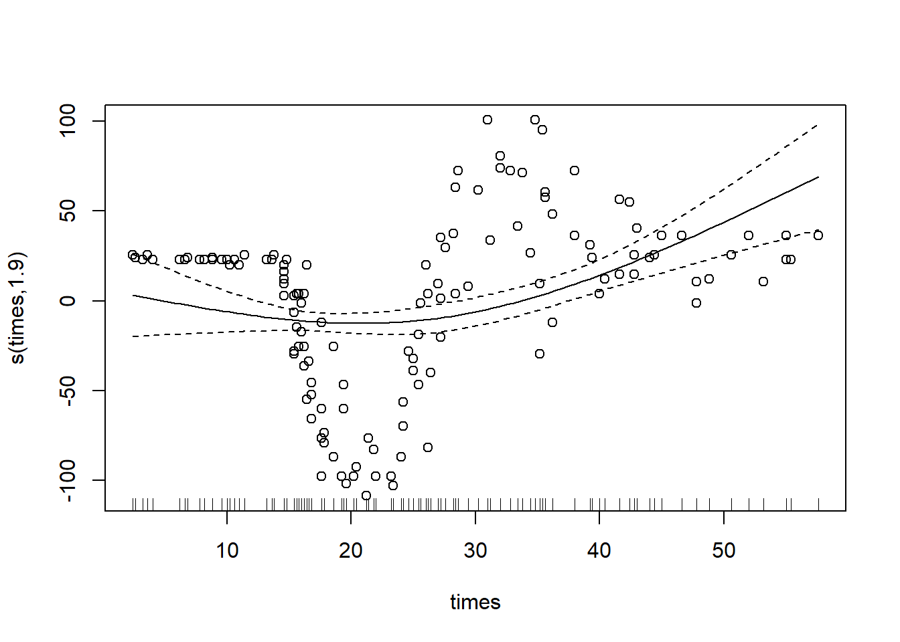

GAMs Lab
Here’s the code if you’d like to follow along: GAMs Lab
So, now that you’ve learned about the theory behind GAMs and seen some applications, it’s time for you to build your own! First, we’ll quickly recap how to use the gam function in mgcv. Then, we’ll need to go over some of the options you have when building a GAM in the mgcv package: the different spline options, how to have two (or more) predictor variables interact in your model, and including categorical data as predictor variables in your model.
The GAM Function
When using the GAM function in mgcv, you have two required arguments: formula and data. The data argument is straightforward, just input your dataframe. The formula argument is a little more complex, but is similar to the formula argument used in the glm function. The most important difference is that you’ll put a smooth on one or more of your predictor variables, as shown below:
library(mgcv) #load the mgcv package## Loading required package: nlme## This is mgcv 1.8-42. For overview type 'help("mgcv-package")'.mcycle <- MASS::mcycle #pull in some data; we'll be using this dataset for this example but not the lab
?gam #take a look at the documentation page for the function to see what you can specify - it's a lot!## starting httpd help server ...## done#now we'll go ahead and fit our spline using the most basic call of the function possible
gam_mod <- gam(accel ~ s(times), data = mcycle) #here, we predict acceleration based on a smooth, nonlinear function of times
plot(gam_mod, residuals = T, pch = 1) #setting residuals=T will include the CIs on the plot
Not too bad to fit! You should notice that the big difference between this and a glm was the “s() wrapped around our predictor variable. Doing this fits a smooth spline to our data, making our model a GAM!
If we want to see the basis functions for our spline, we can do so using the coef function:
coef(gam_mod)## (Intercept) s(times).1 s(times).2 s(times).3 s(times).4 s(times).5
## -25.545865 -63.718008 43.475644 -110.350132 -22.181006 35.034423
## s(times).6 s(times).7 s(times).8 s(times).9
## 93.176458 -9.283018 -111.661472 17.603782Lastly, we can control the amount of smoothing done by our spline in a couple of ways. You can set a fixed smoothing parameter using the argument sp, either inside the smooth function itself or as another argument. Alternatively, you can tell R to chose a smoothing parameter using restricted maximum likelihood.
gam_mod_s1 <- gam(accel ~ s(times), data = mcycle, sp = 0.1) #smoothing by setting a fixed smoothing parameter
gam_mod_s2 <- gam(accel ~ s(times), data = mcycle, method = "REML")
par(mfrow = c(2, 1)) #we'll plot both models side by side to compare
plot(gam_mod_s1, residuals = TRUE, pch = 1)
plot(gam_mod_s2, residuals = TRUE, pch = 1)As you can see, a smoothing factor of 0.1 was too high for our data in this case. Finding a good smoothing factor can be a lot of trial and error, I recommend you play around with it some and see what tends to work best!
Types of Splines in the mgcv Package
That was the default spline option, but there’s lots of options for splines in this package. We won’t go over all of them here, but you can read about the rest of them here on the R documentation page for smooth.terms. We also won’t be getting into the full mathematical theory behind each spline type, but we’ll present the basics; one of the key differences not discussed here is how each spline type penalizes error, which is also outlined in the documentation.
Thin-Plate Splines
A thin-plate regression spline is the default spline in the mgcv package, so it’s what was fit in the example above. They don’t have “knots” like we talked about in lecture, they use an eigen-decomposition to determine where to split the data instead.
To specify a thin-plate spline, use the argument ‘bs=“tp”’:
gam_mod_tp <- gam(accel ~ s(times, bs="tp"), data = mcycle)
plot(gam_mod_tp, residuals = T, pch = 1)Cubic Regression Splines
Cubic regression splines are relatively common, and less theoretically complex than thin-plate splines. They are made up of cubic basis functions defined by knots spread evenly through the covariate values.
To specify a cubic regression spline, use the argument ‘bs=“cr”’:
gam_mod_cr <- gam(accel ~ s(times, bs="cr"), data = mcycle)
plot(gam_mod_cr, residuals = T, pch = 1)
#you can leave the knots argument blank, as above, or specify it:
gam_mod_cr_3 <- gam(accel ~ s(times, bs="cr",k=3), data = mcycle) #(in this example this is clearly a terrible choice of number of knots)
plot(gam_mod_cr_3, residuals = T, pch=1) 
P-splines
P-splines are also known as smoothing splines - their derivatives are penalized to enforce smoothness. P-splines can function better than other types of splines (such as cubic splines or B-splines, which they’re based on) if the knots are not evenly spaced. They are also generally flexible, which is good if the smooth is messy. However, in most cases the thin-plane or cubic regression smooths will yield a lower mean squared error for your model.
To specify a P-spline, use the argument ‘bs=“ps”’:
gam_mod_ps <- gam(accel ~ s(times, bs="ps"), data = mcycle)
plot(gam_mod_ps, residuals = T, pch = 1)You may have noticed that all three of the above plots look pretty similar on the main spline fit, but the CI varies a bit. Which type of spline is best depends on the data, but the authors of the mgcv package note that thin-plate splines typically perform the best, followed by the penalized cubic regression splines and then p-splines.
Other Types of Splines
We chose the above classes of splines to cover because they generally perform well in model fitting and are more common, but mgcv includes options for a range of other splines:
- Duchon splines (generalized versions of thin-plate splines)
- Splines on the sphere (popular for data sampled across the globe, with latitude and longitude as arguments)
- B-splines (relatively common)
- Random effects (can represent the parametric interactions of multiple variables)
- Markov random fields (popular for discrete contiguous geographic units)
- Gaussian process smooths
- Soap film smooths
- Adaptive smoothers
- Factor smooth interactions
- Random factor smooth interactions
- A custom smooth! (using the function custom.smooth)
Interacting Variables
All this is great for fitting splines with one or more predictor variables acting independently, but how do we incorporate interactions between variables in our model? We’ll use a new dataset on metal concentrations in different soil areas to answer this question.
For variables on the same scale, we can use the same smooth spline function as before, wrapping our variables with s(). This is often useful for coordinate data.
library(sp)## The legacy packages maptools, rgdal, and rgeos, underpinning the sp package,
## which was just loaded, will retire in October 2023.
## Please refer to R-spatial evolution reports for details, especially
## https://r-spatial.org/r/2023/05/15/evolution4.html.
## It may be desirable to make the sf package available;
## package maintainers should consider adding sf to Suggests:.
## The sp package is now running under evolution status 2
## (status 2 uses the sf package in place of rgdal)data(meuse, package="sp") #load in and inspect dataset
head(meuse)## x y cadmium copper lead zinc elev dist om ffreq soil lime
## 1 181072 333611 11.7 85 299 1022 7.909 0.00135803 13.6 1 1 1
## 2 181025 333558 8.6 81 277 1141 6.983 0.01222430 14.0 1 1 1
## 3 181165 333537 6.5 68 199 640 7.800 0.10302900 13.0 1 1 1
## 4 181298 333484 2.6 81 116 257 7.655 0.19009400 8.0 1 2 0
## 5 181307 333330 2.8 48 117 269 7.480 0.27709000 8.7 1 2 0
## 6 181390 333260 3.0 61 137 281 7.791 0.36406700 7.8 1 2 0
## landuse dist.m
## 1 Ah 50
## 2 Ah 30
## 3 Ah 150
## 4 Ga 270
## 5 Ah 380
## 6 Ga 470mod <- gam(cadmium ~ s(x, y) + s(elev), #first, we fit a model where x and y coordinates interact directly and
data = meuse, method = "REML") #elevation is separate
plot(mod)However, often our interacting variables won’t be on the same scale. We can deal with this using a tensor spline, te().
tensor_mod <- gam(cadmium ~ te(x, y, elev), #this model allows x and y coordinates and elevation to interact
data = meuse, method = "REML") #despite being on different scales
plot(tensor_mod)If you want to separate out independent and interacting effects of variables, you can use a tensor interaction ti(). Here, we’ll fit a regular smooth for the variables at first and then add a tensor interaction term.
tensor_mod2 <- gam(cadmium ~ s(x, y) + s(elev) + ti(x, y, elev), #notice how two regular smooths are fit in addition to
data = meuse, method = "REML") #the tensor interactionBoth tensor splines and tensor interactions allow you to specify the different types of spline fits (e.g. cubic regression, P-spline, etc.) that we discussed above. They’re very useful overall, and will definitely come in handy during this lab!
Including Categorical Data
Our last topic for this mini-lecture is how to include categorical data in our GAMs. Simply including a categorical variable is straightforward and similar to how it’s done in a GLM - just add the variable to the model formula without a smooth. When done like this, you’ll have a different intercept for each category of land use.
mod2da <- gam(cadmium ~ s(dist)+landuse,
data = meuse, method = "REML")However, if you want different smooths depending on the values of your categorical variables, you’ll have to include them differently. Categorical variables can be included inside the smooth functions to easily achieve this.
mod_sep <- gam(copper ~ s(dist, by = landuse) + landuse, #notice how landuse is included both inside and outside the smooth
data = meuse, method = "REML") #this gives us different smooths and different intercepts for each value of the variable
summary(mod_sep)##
## Family: gaussian
## Link function: identity
##
## Formula:
## copper ~ s(dist, by = landuse) + landuse
##
## Parametric coefficients:
## Estimate Std. Error t value Pr(>|t|)
## (Intercept) 20.115 46.338 0.434 0.665
## landuseAb 15.674 46.609 0.336 0.737
## landuseAg 6.670 46.827 0.142 0.887
## landuseAh 18.137 46.398 0.391 0.697
## landuseAm 13.364 46.441 0.288 0.774
## landuseB 0.825 62.981 0.013 0.990
## landuseBw 18.909 46.758 0.404 0.687
## landuseDEN 0.000 0.000 NaN NaN
## landuseFh 4.885 155.445 0.031 0.975
## landuseFw 18.578 46.573 0.399 0.691
## landuseGa 122.541 99.226 1.235 0.219
## landuseSPO 1.885 146.517 0.013 0.990
## landuseSTA 3.261 49.284 0.066 0.947
## landuseTv 4.885 134.316 0.036 0.971
## landuseW 18.917 46.444 0.407 0.684
##
## Approximate significance of smooth terms:
## edf Ref.df F p-value
## s(dist):landuseAa 1.000e+00 1.000e+00 0.000 0.98367
## s(dist):landuseAb 1.000e+00 1.000e+00 1.672 0.19845
## s(dist):landuseAg 1.000e+00 1.000e+00 0.442 0.50765
## s(dist):landuseAh 2.524e+00 3.113e+00 8.725 2.28e-05 ***
## s(dist):landuseAm 1.000e+00 1.000e+00 6.802 0.01025 *
## s(dist):landuseB 1.000e+00 1.000e+00 0.023 0.87892
## s(dist):landuseBw 1.000e+00 1.000e+00 0.047 0.82898
## s(dist):landuseDEN 1.000e+00 1.000e+00 0.042 0.83865
## s(dist):landuseFh 8.905e-16 8.905e-16 0.000 1.00000
## s(dist):landuseFw 2.696e+00 3.304e+00 5.292 0.00134 **
## s(dist):landuseGa 1.882e+00 1.986e+00 0.654 0.49571
## s(dist):landuseSPO 7.012e-16 7.012e-16 0.000 1.00000
## s(dist):landuseSTA 1.000e+00 1.000e+00 0.005 0.94455
## s(dist):landuseTv -6.791e-17 -6.791e-17 0.000 1.00000
## s(dist):landuseW 4.009e+00 4.814e+00 32.861 < 2e-16 ***
## ---
## Signif. codes: 0 '***' 0.001 '**' 0.01 '*' 0.05 '.' 0.1 ' ' 1
##
## Rank: 146/150
## R-sq.(adj) = 0.634 Deviance explained = 71.1%
## -REML = 532.81 Scale est. = 199.48 n = 154plot(mod_sep,pages=2)As you can see this generates a lot of graphs of our model, one for each value of landuse.
Model Selection
As with any other model, you will often build multiple GAMs and need to pick the best one, but how? There are a couple of different ways to do this, including comparing likelihoods/the likelihood ratio test and calculating AIC. We’ll quickly go over how to do both of these for GAMs.
Important: When performing model selection, you should (almost always) use an ML estimate instead of an REML estimate. When you are comparing models with different fixed effects, in a likelihood ratio test or in some other way, you should always use ML instead of REML. Once you have selected the best model, you can then go back and use REML to get a new, typically more accurate, parameter estimate; in this situation, REML is better because it typically returns a less biased estimate of the variance than ML. To do this, simply use “ML” as the method argument in your model, as below:
mod2d <- gam(cadmium ~ s(x,y), data = meuse, method = "ML")Now, say we want to perform a likelihood ratio test between this model and a model that includes elevation (which we can do because they’re nested!). We can build our elevation model, also using the ML method, and then perform a likelihood ratio test (here we’re using a canned one from a package because actually extracting the ML value from the model is a bit tedious).
mod2d_elev <- gam(cadmium ~ s(x, y) + s(elev),
data = meuse, method = "ML")
library(lmtest) #we need to load this package to do the likelihood ratio test## Loading required package: zoo##
## Attaching package: 'zoo'## The following objects are masked from 'package:base':
##
## as.Date, as.Date.numericlrtest(mod2d_elev,mod2d) ## Likelihood ratio test
##
## Model 1: cadmium ~ s(x, y) + s(elev)
## Model 2: cadmium ~ s(x, y)
## #Df LogLik Df Chisq Pr(>Chisq)
## 1 30.486 -306.58
## 2 26.345 -329.36 -4.141 45.568 3.029e-09 ***
## ---
## Signif. codes: 0 '***' 0.001 '**' 0.01 '*' 0.05 '.' 0.1 ' ' 1A significant p-value from the likelihood ratio test indicates that the full model fits the data better than the reduced model, and we should therefore use the full model (which contains elevation).
In most cases, we won’t be comparing models that are nested. In this case, we want to compare the AIC values of two models that incorporate the same predictor variables using different spline types. This can easily be done using the AIC() function on our model(s).
mod <- gam(cadmium ~ s(x, y) + s(elev), #this model considers elevation separately from x and y
data = meuse, method = "ML")
tensor_mod <- gam(cadmium ~ te(x, y, elev), #this model considers elevation interacting with x and y
data = meuse, method = "ML")
AIC(mod,tensor_mod) # we can calculate both aic values simultaneously to make comparison even easier!## df AIC
## mod 30.48630 674.1282
## tensor_mod 41.22866 649.6274The AIC from the tensor model is much lower than the AIC from the model considering elevation separate from x- and y-coordinates. Therefore, we can confidently say that the tensor spline model is better!
Overall, model selection in GAMs is pretty straight-forward and based on a lot of the principles we discussed in class. Just make sure you use ML instead of REML when picking models to compare and you’re good to go!
Other Important Notes
Those are the main things you need to know to start fitting GAMs in R, but here are a couple other functions you might find useful during lab (or when fitting GAMs in your own work):
- gam.check() - will return a significant p-value for any smooth that doesn’t have enough basis functions (i.e. not enough knots)
- concurvity() - will check how determined smooths are by other smooths, AKA how independent/dependent your predictors are. A lower concurvity means a smooth/predictor is more independent.
- vis.gam(se=x) - allows you to add confidence intervals to your GAM plots by changing the x argument. vis.gam() has lots of other cool plotting options for your data as well, which can be useful when your GAMs have many dimensions.
Also, this github tutorial is immensely useful for walking through the basic options for GAMs in mgcv in more depth than we do here. Much of the material for this mini-lecture was adapted from it, and I highly recommend it for anyone who needs to use GAMs in their own research.
Lab Exercise
Now that we’ve been over all that, it’s time for the mini-lab! For this lab, we are providing you with (simulated) data about three species of garter snakes: T. atratus, T. elegans, and T. couchii. You can find the data at this link. Using this data, we would like you to build a GAM that models snake speed as a function of some (or all) of the predictor variables in the file.
The data file contains the following information about each individual:
- Species (atratus, elegans, or couchii)
- Age (“Adult” or “Juvenile”)
- SVL (Snout-Vent Length, the total length of the snake)
- Mass (mass of the snake)
- Tail (length of the snake’s tail (yes, snakes have tails: they begin where the ribs end))
- Lat (latitude at which the snake was collected)
- Long (longitude at which the snake was collected)
- MAMU (mass-adjusted mouse units, this measures the snake’s resistance to TTX, a toxin that binds sodium channels. Resistance (mostly) comes from sodium channel mutations, which could affect muscle action and therefore snake speed…)
- Speed (what we want to predict!)
You can assume that SVL, Mass, and Tail are on the same scale, as are Latitude and Longitude. ALl other variables are on different scales and must be treated accordingly in your model.
Part 1: Examine Your Data
First, take a few minutes to examine your data, plotting different variables to see if they might be correlated and if so in which direction. If variables are sufficiently correlated, including both of them in your model might not be worth the extra complexity it introduces.
Hint: Start by just using the plot function to plot variables from the data against as each other (for example, put Speed on the y-axis and Latitude on the x-axis). Alternatively, you can use the cor() function to generate a matrix of covariants for all the items in your data, but this function does not work for categorical data - you’ll have to exclude those columns of the dataframe.
Question: What predictor variables seem correlated with one another? What predictor variables seem correlated with speed? Given these correlations, what variables do you think you should include in your GAM? Write your answer(s) in a Word doc for submission.
Part 2: Build Your GAM
Now that you’ve examined the data and have an idea of which variables you want to include in your model, it’s time to make a GAM! Refer to the earlier parts of this tutorial as much as needed, and feel free to ask questions. Again, we recommend you make multiple GAMs and then choose the one with the best fit, starting with the one you proposed in the earlier question. There’s a decent chance that won’t be the best model possible, so it’s worth playing around and seeing what you can make happen. Remember to use ML when building your models to compare!
Hint: For model comparison, use the summary() function on your GAM object. It will give you a list of the different predictor variables and the likelihood (in the form of a p-value, though you can’t interpret it quite like a normal p-value) that they affect the response variable (speed). It will also return values for R-squared; the ML (maximum likelihood) or REML (restricted maximum likelihood), depending on which you chose while building your model; and the deviance explained by your model. You can also perform a likelihood ratio test using the ML values, or calculate AIC (revisit “Model Selection” above to review how to do this).
Question: Which model ended up being the best fit for the data? Is it the one you predicted originally? Include your model-generating function in your answer, either as a screenshot of R or by typing it out.
Bonus activity: Plot your model’s predicted data over the observed data to confirm the predictions are as good (or bad) as the R-squared value suggests. You can do this using your GAM object and the vis.gam() and points() functions, as below:
mod2d <- gam(cadmium ~ s(x,y), data = meuse, method = "REML")
vis.gam(mod2d, view = c("x", "y"), #the view argument allows you to define which variables make the axes
plot.type = "contour", too.far = 0.05)
points(meuse)
#you may need to specify which parts of the data to pass to points, as below (sometimes it just picks the first two columns which is an issue if that's not the part of your model you're plotting)
points(meuse$x,meuse$y)